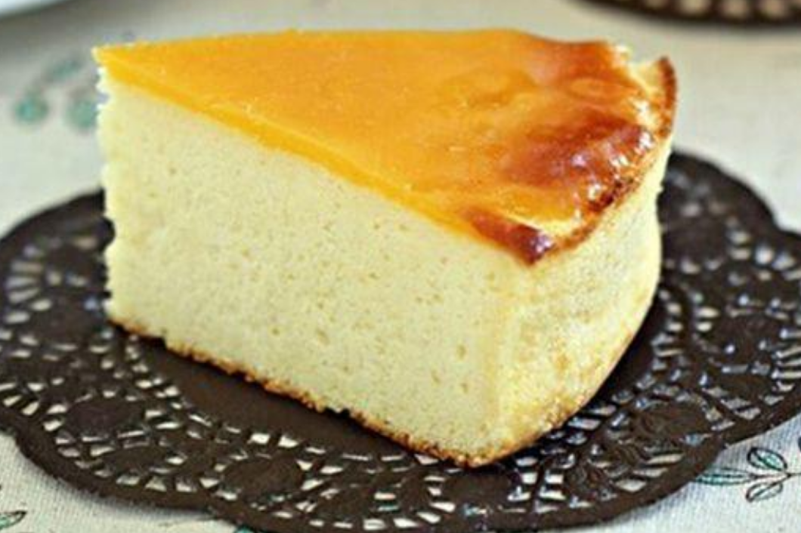

Harambee

Ingredients
- 1 cup cream cheese
- 1/4 cup corn oil
- 1/3 cup caster sugar
- 3 tablespoons honey
- 1/3 cup milk
- 1/3 cup Self-Rising flour
- 1 tablespoon Corn Flour
- 3 eggs
- 3 slices cheddar cheese
- 3/4 cup whipped cream
Steps
- Place Cream Cheese (1 cup) , Corn Oil (2 1/2 Tbsp) , Caster Sugar (3 Tbsp) , Honey (2 Tbsp) and Milk (1/3 cup) in a bowl under double boiler and stir mixture till melted. Then pass mixture through a sieve into a large bowl.
- Sift Self-Rising Flour (1/3 cup) and Corn Flour (1 Tbsp) into cheese mixture. Stir and add Eggs (3) Yolks and mix to combine.
- Meringue - whisk egg whites until frothy at low speed. Add sugar sugar and whisk from medium speed to high speed until peak form.
- Fold 1/3 of the meringue into the cheese batter with a rubber spatula. Then pour in the remaining egg whites, gently fold the mixture again until just combined.
- Pour batter into a 7 inch removable cake pan (wrap the cake pan with aluminium foil to prevent seepage) and tap pan lightly to remove air bubbles.
- Steam bake cake at preheat oven 120 deg C for 20 minutes. Then increase oven temperature to 160 deg C and bake for another 40 minutes.
- Run knife around rim of pan so that the cake will not get a waist line. Leave cake to cool completely and place the whole cake in pan, covered with aluminium foil in the freezer overnight. (The cheesecake will shrink as it cools)
- Take cheesecake out from the freezer and upside down the cake. Then start to cook the topping cream.
- Topping - Melt the topping ingredients in a double boiler, stir till smooth and pour on top of the cheesecake. Then spread the topping cream quickly (the topping cream must be very hot as it'll set quickly). Never mind about the uneven spreading, as the topping will melts during baking.
- Place the whole cake in the preheated oven at 180 deg C and bake for about 20 minutes or till the topping cream melted and turn brown at the sides.
- This cake can be served in room temperature or chill in refrigerator before serving.